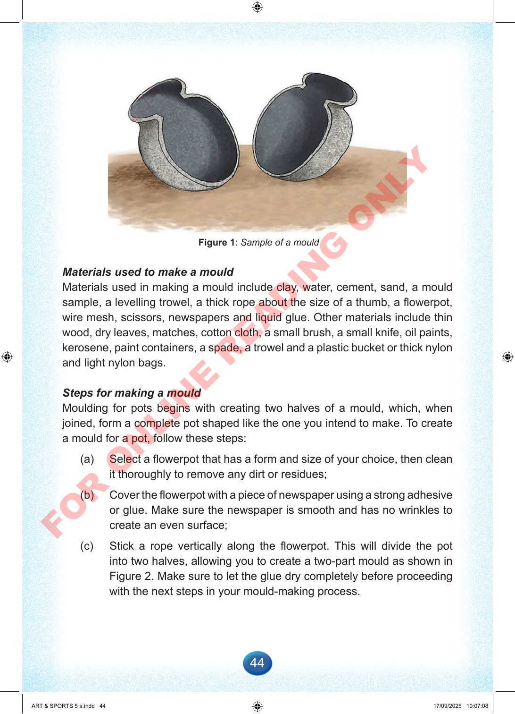

44
Figure
1:
Sample
of
a
mould
Materials
used
to
make
a
mould
Materials
used
in
making
a
mould
include
clay,
water,
cement,
sand,
a
mould
sample,
a
levelling
trowel,
a
thick
rope
about
the
size
of
a
thumb,
a
flowerpot,
wire
mesh,
scissors,
newspapers
and
liquid
glue.
Other
materials
include
thin
wood,
dry
leaves,
matches,
cotton
cloth,
a
small
brush,
a
small
knife,
oil
paints,
kerosene,
paint
containers,
a
spade,
a
trowel
and
a
plastic
bucket
or
thick
nylon
and
light
nylon
bags.
Steps
for
making
a
mould
Moulding
for
pots
begins
with
creating
two
halves
of
a
mould,
which,
when
joined,
form
a
complete
pot
shaped
like
the
one
you
intend
to
make.
To
create
a
mould
for
a
pot,
follow
these
steps:
(a)
Select
a
flowerpot
that
has
a
form
and
size
of
your
choice,
then
clean
it
thoroughly
to
remove
any
dirt
or
residues;
(b)
Cover
the
flowerpot
with
a
piece
of
newspaper
using
a
strong
adhesive
or
glue.
Make
sure
the
newspaper
is
smooth
and
has
no
wrinkles
to
create
an
even
surface;
(c)
Stick
a
rope
vertically
along
the
flowerpot.
This
will
divide
the
pot
into
two
halves,
allowing
you
to
create
a
two-part
mould
as
shown
in
Figure
2.
Make
sure
to
let
the
glue
dry
completely
before
proceeding
with
the
next
steps
in
your
mould-making
process.
ART
&
SPORTS
5
a.indd
44
ART
&
SPORTS
5
a.indd
44
17/09/2025
10:07:08
17/09/2025
10:07:08
F
O
R
O
N
L
I
N
E
R
E
A
D
I
N
G
O
N
L
Y